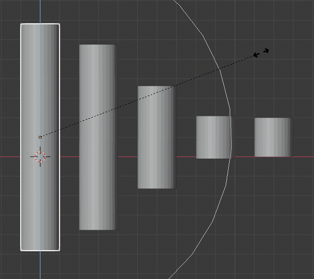
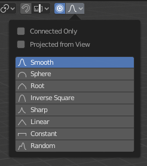
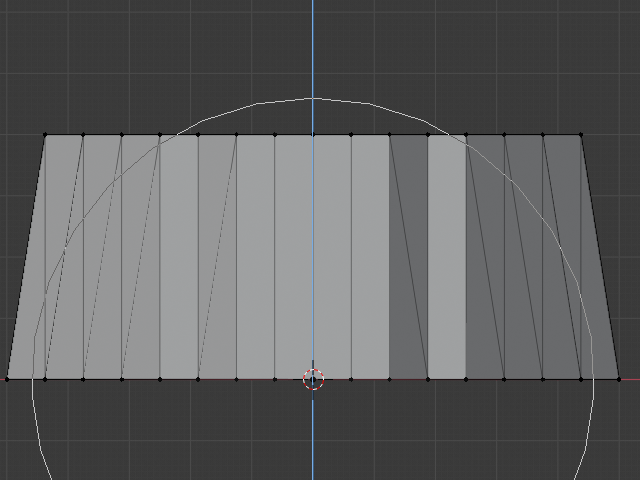
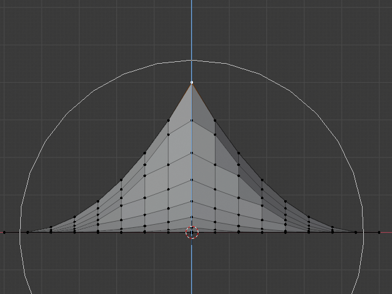
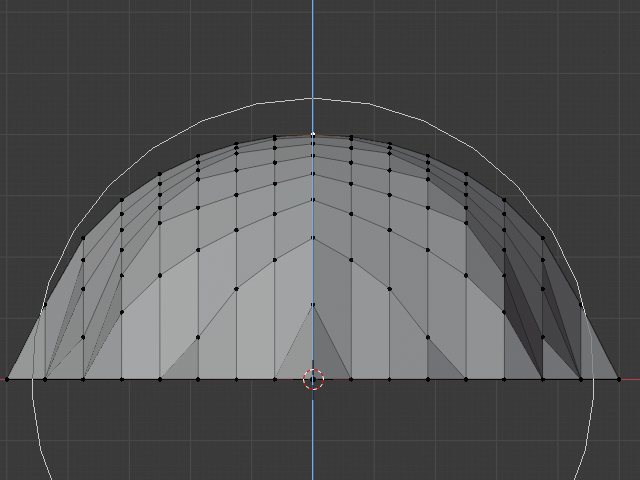

衰减编辑¶
衰减编辑是一种转换选定元素（如顶点）的方法，同时还会影响附近的其他元素。例如，单个顶点的移动导致未选顶点在给定范围内移动。更靠近所选顶点的未选顶点将移动的距离远远多于较远的顶点（即，它们将相对于所选元素的位置成比例地移动）。由于衰减编辑会影响附近的几何图形，因此当你需要使密集网格的表面平滑变形时将非常有用。
物体模式¶
参考
| 模式: | 物体模式 |
|---|---|
| 菜单: | 通过标题栏中的  图标。 图标。 |
| 快捷键: | O |
衰减编辑通常用在 编辑模式，但是，也可以在 物体模式。在 物体模式 下该工具作用于物体整体而非独立的网络元素。
在下图中，沿Z轴缩放右侧的圆柱体。当开启 衰减编辑 时，邻近的圆柱体同样位于工具的影响半径内。

在物体模式的衰减编辑。
编辑模式¶
参考
| 模式: | 编辑模式 |
|---|---|
| 菜单: | 并通过 高亮图标 |
| 快捷键: | O, Alt-O, Shift-O |
使用密集的几何图形时，可能很难做到在对顶点进行微妙的调整时不会在模型表面产生可见的块和折痕。当你遇到像这样的情况时衰减编辑工具可以用来使模型表面平滑地变形。这是通过工具在给定范围内自动修改未选定的顶点来完成的。

在编辑模式中的衰减编辑。
影响¶
您可以使用鼠标滚轮分别增加或减小衰减编辑工具影响的半径 WheelUp, WheelDown 或 PageUp, PageDown 。当你改变半径时，围绕你选择的点将相应地调整它们的位置。

影响圆环。
选项¶

衰减编辑工具。 |
衰减编辑 模式菜单在3D视图*标题栏上。
- 禁用 O, Alt-O
- 衰减编辑关闭，只有选定的顶点会受到影响。
- 启用 O, Alt-O
- 所选顶点以外的顶点在定义的半径范围内受到影响。
- 从试图投射
在应用半径时忽略沿视图的深度。

常规和投射式 (2D) 衰减选项 (右) 之间的差异。
- 仅相连项
- 衰减不是仅制可以使用半径，而是通过连接的几何体进行扩展。这意味着你可以按比例（衰减）编辑手指中的顶点而不影响其他手指。当其他顶点在物理上接近（在3D空间中）时，它们随着网格的拓扑连接边远离。 连接 有效时，图标将显示灰色中心。此模式仅适用于 编辑模式 。
- 衰减
- 编辑时，你可以使用标题栏图标 衰减 菜单，或按下 Shift-O 来切换不同的选项，调整曲线轮廓。

常量，不衰减。 |

随机化衰减。 |

尖锐衰减。 |
|

根部衰减。 |

球形化衰减。 |

平滑衰减。 |

{kind=link}
{kind=link}
{kind=link}
{kind=link}
{kind=link}
{kind=link}